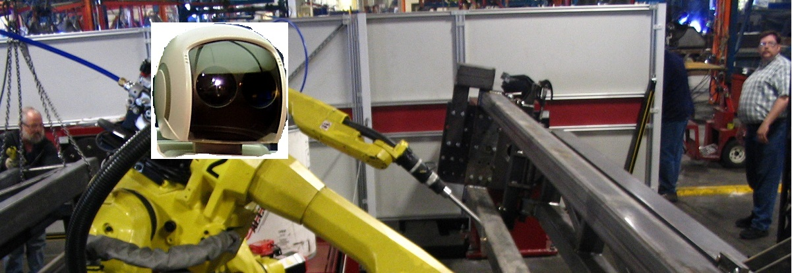
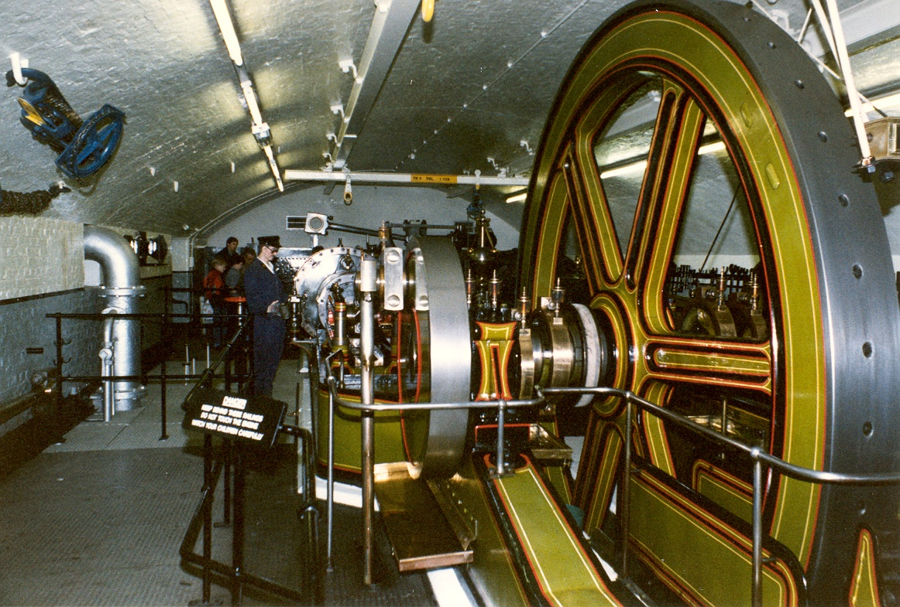

Technology worldwide has advanced at an incredible rate. With each new year, the way we accomplish tasks and produce goods are being done in a more efficient and faster way. Companies are always looking to produce the most content at the cheapest price, and as a result use technology to aid in this process. As this desire for goods increases, robots and other forms of automation have been implemented to meet these demands. This new wave of robots in the workplace offers companies with an alternative to the human worker, creating a way for them to essentially have the same quality end product that a human worker can produce, at a lower cost.
As a new age of engineering and advancement in the workplace comes around, companies are implementing more and more machinery into their production methods. Robots in many cases have been proven to produce goods faster and at the same quality as humans. Businesses are looking for whatever way they can to maximize their means of production, and in most all cases, automation is the most cost effective way. All of this will in turn greatly increase the profits of companies by varying percentages.
Tools to assist in on the job?
While machines are evolving at a pace where they can in some cases replace human workers, often times companies use robotics as simply tools that people to increase productivity. The underlying principle of automation and machinery in factories, stores, and other businesses, is to speed up the production process. With the use of human guided tools, companies can still keep workers while having a vast increase in production times. Factories all across the world have made strides in automation, in some cases creating a “workerless” workspace. While this method of automation servers the purpose of increasing profits, the loss of human work has negative ramifications on the ones who were previously employed.